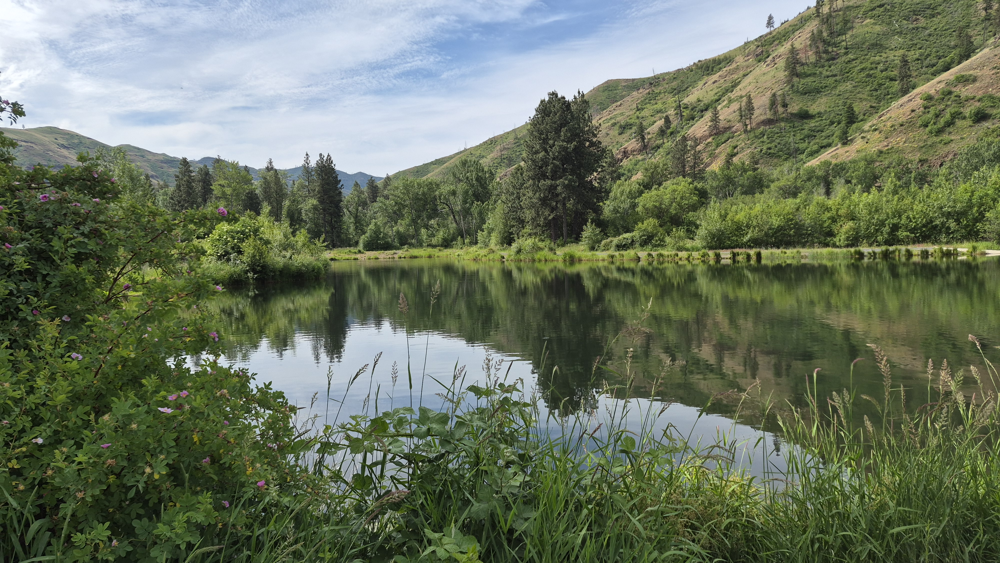

Outdoors
Hike of the Month
Badger Mountain
Trails, viewsheds, and the meeting point between suburbia and shrub-steppe.
Hike of the Month
Trails, viewsheds, and the meeting point between suburbia and shrub-steppe.

Weekend Camp
A Blue Mountains camping trip within weekend reach of the Tri-Cities.
Path Ride
A short ride report and GoPro view from a local path near Benton City.